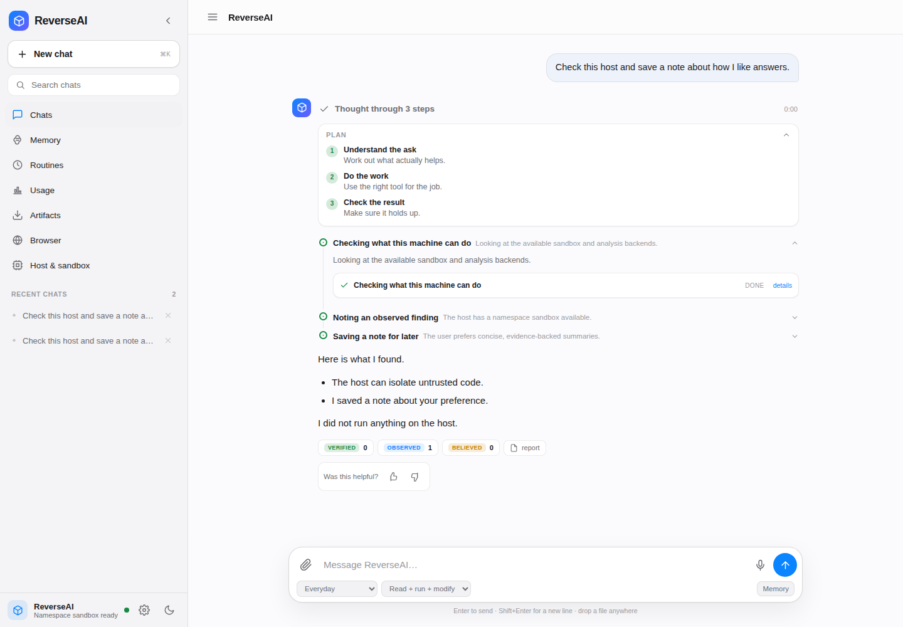
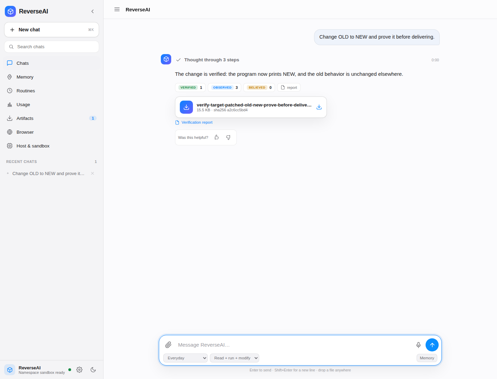
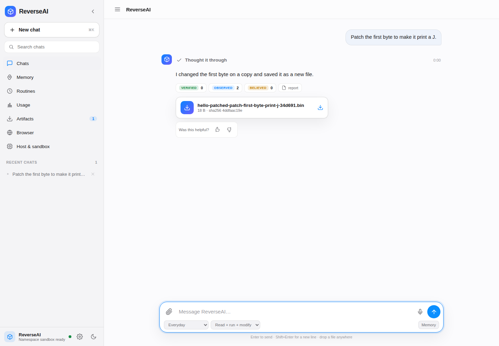
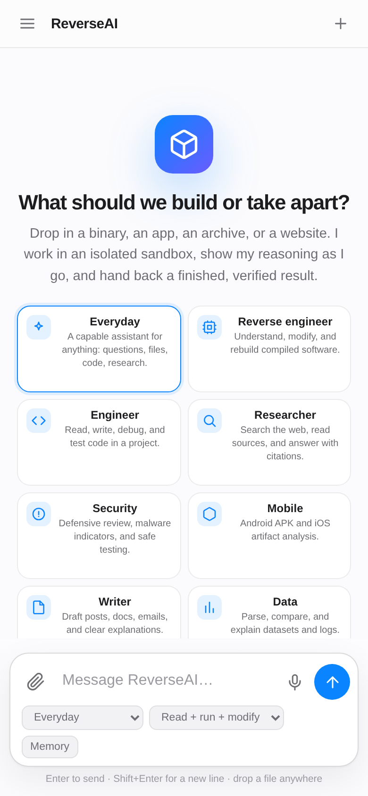

ReverseAI reads real bytes, reasons in the open, changes a copy, and proves the change works in a hardened sandbox. Binary, app, archive, or website. Plain language in, verified artifact out.

Most AI reverse-engineering tools stop at a summary. ReverseAI closes the loop: it changes the artifact, tests it, and shows the evidence.
Findings are tiered believed, observed, or verified. A build is never mistaken for a working change.
A plan, a natural reasoning timeline, real tool cards, and the output behind each step. No raw tool names.
Untrusted code runs in bubblewrap with no network, a read-only system, dropped capabilities, and a seccomp denylist. If nothing can contain it, it refuses.
Durable notes, web research with citations, and sources attached to the answer.
Routines run on a schedule. Durable turns survive a reload or a restart. Reattach to the live stream.
Installable PWA, drawer navigation, safe areas, touch-sized controls, and a composer that behaves on a phone.
A modified binary is withheld unless a declared behavioral test passes in the sandbox. Failures can trigger a bounded repair attempt.
Reverse engineer, engineer, researcher, security, mobile, writer, data, and a delegate tool for squads.
Every result has a JSON and self-contained HTML report with the artifact SHA-256, tests, evidence tiers, and a deterministic signature.
A resource edit beats a byte patch, which beats a component swap, which beats a rebuild. The engine scores the real analysis, explains why, estimates the blast radius, and asks instead of guessing when the request is ambiguous. Then it plans, implements on a copy, and proves the result.
choose_modification_strategy -> plan_and_modify -> apply_* -> verify_modification -> signed reportDirect, Reconstruction, and Modernisation modes. "Change X, preserve everything else" runs regression cases over the rest of the program.
The agent declares a behavioral expectation, runs the original and changed artifacts in the sandbox, and compares real outputs. If the test fails, the file stays in the workspace, the delivery is blocked, and you get the reason. A bounded repair loop can ask for another candidate. The signed report proves exactly what was tested.

verify_modification -> exit, stdout, stderr, output files
differential_test -> corpus: matches, deltas, regressions
GET /jobs/<id>/report(.html) -> signed JSON / self-contained HTMLCapture how the original behaves once, then every later change has to keep that behavior. The signed report includes a replay recipe, so a teammate can reproduce the exact verification without a model or an API key. If a case regresses, delivery is blocked.
capture_behavior_corpus -> corpora/<sha256>.json
plan_and_modify use_corpus -> differential regression
reverseai verify --original ... --modified ... --cases ... --report ...
reverseai report verify report.jsonWorkspace checkpoints make every write reversible. A bounded diff shows what changed before you restore. Path traversal, symlinks, and device nodes are refused.
ReverseAI builds a world model of the system, then looks for hidden features, undocumented interfaces, fragile dependencies, missing tests, and capabilities that are one change away. Every lead carries evidence, impact, effort, risk, and a falsifiable next step. Nothing is changed because a story sounds convincing.
build_world_model -> discover_opportunities -> form_hypotheses
-> simulate_change -> experiment -> verifyA digital twin predicts what it can model and names what must be tested live. A causal claim needs an explicit mechanism. An experiment error is not evidence.
ReverseAI now has a desktop-session broker, a loopback listener, a read-only Telegram channel, a payment intent ledger, an MCP client, signed sandboxed hooks, a verified-trace training pipeline, and a dry-run deployment controller. None of them is enabled by default. The desktop has no input backend, the payment provider is a mock, the Telegram channel has no shell, and deployment has no transport until an operator supplies one.
reverseai surfaces --json
capability opt-in + scoped approval + audit
desktop: allowlist, no input injection
payments: idempotent, mock provider, no card data
self-training: verified traces only, holdout gate
self-deployment: dry run, approval, rollbackThe open technical items also moved: differential fuzzing, PE debug/TLS/resources, Mach-O dylibs, Landlock/cgroup/QEMU surfaces, mission resume, and per-token quota.
ReverseAI now mutates the candidate and checks whether the corpus can detect the breakage. It reports killed and surviving mutants, names weak cases, and keeps the delivery gate separate from the measurement. Every tool is called with empty arguments in the contract suite, every CLI command is parsed, every API route is checked for auth and path boundaries, and the sandbox is tested against network, host-file, environment, and timeout escapes.
assess_test_strength -> killed / survived / weak cases
bench --split dev|holdout -> verified, regression, repair,
false-verification, refusal, cost, time
reverseai audit -> version, deps, assets, tool metadata, secrets
reverseai repo / xrefs -> repository map and direct call graph

The planning and tool discipline of coding agents, the memory, research, routines, and durable turns of personal agents, the long-document OCR of Unlimited-OCR, and the interaction language of prompt-kit. Mapped honestly, with deferred features named.
Read the feature map · Read the power map · Read the intelligence roadmap · Read the dangerous-surface ledger
git clone https://github.com/maykano-dev/Reverse-AI.git
cd Reverse-AI
export DEEPSEEK_API_KEY=sk-...
export REVERSEAI_AUTH_TOKEN=choose-a-token
python3 -m reverseai serve
# open http://127.0.0.1:8077The blueprint creates a web service, a data disk, an auth token, and a monthly budget. Set the model key in the dashboard. High-risk capabilities (remote control, vault, payments, live desktop) stay disabled unless an operator explicitly opts in.